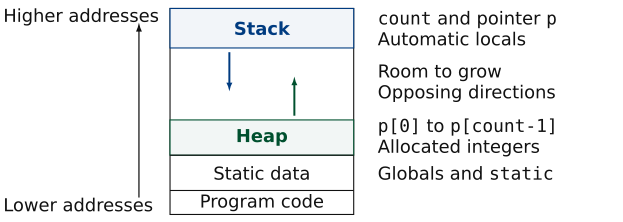
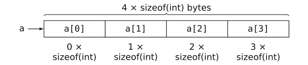
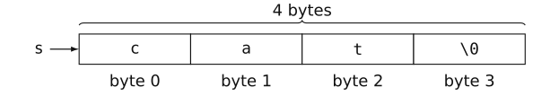
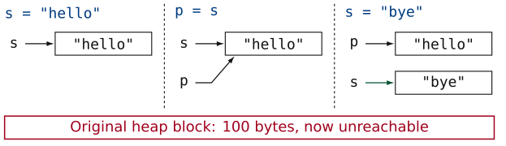
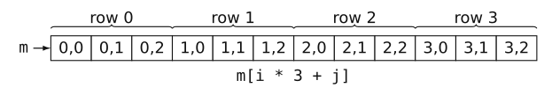
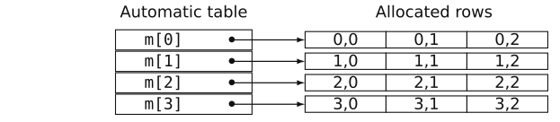
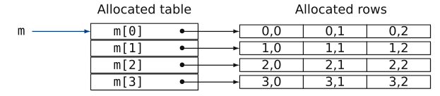
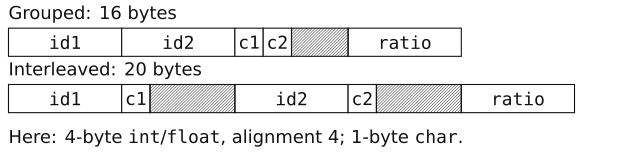

C programming · CM10 · 90 minutes
ISTIC · University of Rennes
2026–2027
$ whoamiNot a C expert … :')
Associate Professor
University of Rennes · ISTIC
IRISA / Inria · Taran
Previously: Inria / INSA Lyon, Emeraude.
PhD: BSC / UPC.
MareNostrum 4 · BSC, Barcelona
How much space do we need?
A program has room for four integers.
The user asks to store 100. What must change?
demos/allocation/01-fixed-array.c
Terminal: make run FILE=01-fixed-array.c
Predict what happens when we enter 100.
int count;
int p[4];
if (scanf("%d", &count) != 1) return EXIT_FAILURE;
if (count <= 0 || count > 4) {
fputs("Choose 1 to 4: the array has four elements.\n", stderr);
return EXIT_FAILURE;
}demos/allocation/02-capacity.c
Terminal: make run FILE=02-capacity.c
How can we reserve count integers?
int *p = malloc(count * sizeof(int));
if (p == NULL) {
fputs("Allocation failed\n", stderr);
return EXIT_FAILURE;
}demos/allocation/03-missing-free.c
Terminal: make run FILE=03-missing-free.c
The program prints a result. Is it correct?

Illustrative 16-bit address space; real address widths and layouts vary.
free?p to NULL free the block?Static storage
Globals and static objects last for the whole program, with storage reserved before execution.
Automatic storage
Locals last for their block execution. Recursive calls have separate locals.
Storage is managed automatically. Deep recursion can exhaust the stack.
C: explicit responsibility
For every successful allocation, decide who will release it and when. Repeated leaks consume more memory.
Java: garbage collection
The runtime can reclaim unreachable objects automatically.
<stdlib.h>| Function | Purpose |
|---|---|
malloc(bytes) |
Allocate uninitialised storage |
calloc(count, size) |
Allocate storage with all bits zero |
realloc(p, bytes) |
Resize an allocation; it may move |
free(p) |
Release an allocation |
free contractAnswer questions 1–5, then discuss your reasoning.
Allocate data, then locate each element.

Use a[i], equivalently *(a + i), for 0 ≤ i < 4.
Terminal: make run FILE=09-array.c

Three letters need four bytes, including '\0'.
Terminal: make run FILE=10-string.c
Predict the values of p and s, and the fate of the allocation.
demos/allocation/11-string-assignment.c
Terminal: make run FILE=11-string-assignment.c

The literals are separate from the lost heap block. Neither pointer can now be passed to free.

One allocation, one free(m).
demos/allocation/12-matrix-flat.c
Terminal: make run FILE=12-matrix-flat.c
int *m[4]; // Automatic table of four pointers.
for (int i = 0; i < 4; ++i)
m[i] = malloc(3 * sizeof(int));
Check each row. Use m[i][j]; free each row, not m.
demos/allocation/13-matrix-rows.c
Terminal: make run FILE=13-matrix-rows.c

Check m first, then each row. Free rows first, then free(m).
demos/allocation/14-matrix-dynamic.c
Terminal: make run FILE=14-matrix-dynamic.c
Answer questions 6–8, then discuss your reasoning.
Group data and access its members.
We want to keep a street name and a house number in one object.
Three tools
struct: group the street and number.enum: name integer constants.typedef: give a type another name.Terminal: make run FILE=15-types.c
Padding
The implementation may insert unused bytes between members and at the end to satisfy alignment requirements.
sizeof(struct T) includes padding.
16 vs 20 bytes in this layout. Measure with sizeof and offsetof.
Terminal: make run FILE=16-padding.c
typedef: a name for a type